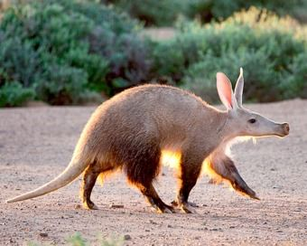
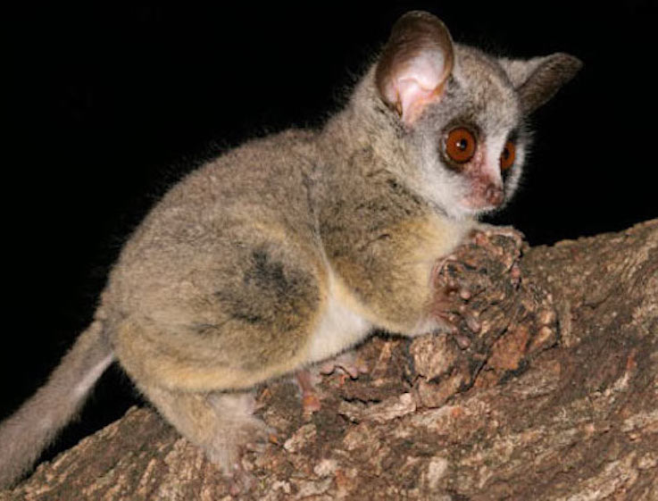
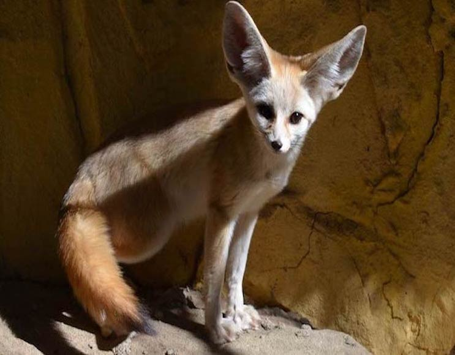
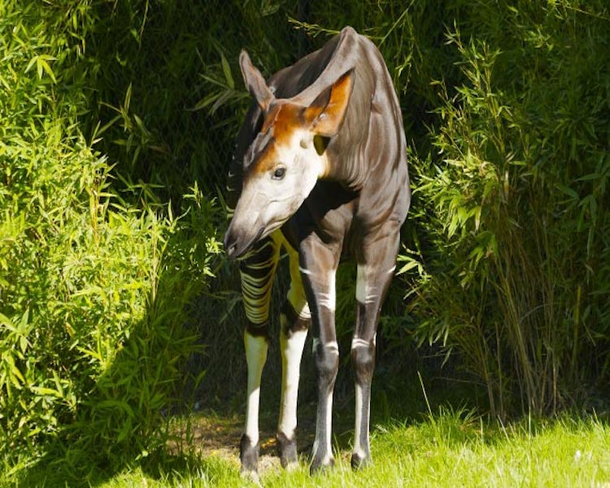

ANIMAL WEIRD
Welcome to Animal Weird - See the animals in Africa!

Aardvark
- Scientific Name: Orycteropus afer
- Conservation Status: Least Concern
- The aardvark is a nocturnal mammal whose diet consists mainly of ants and termites. It uses its excellent sense of smell to find food, and its long, sticky tongue to capture its prey.
- The aardvark has thick skin to protect it from insect bites and stings.
- The aardvark is an expert burrower. If threatened, it will retreat to the safety of its burrow.
- If no burrow is available, it will quickly dig a new one, reversing out backwards when the danger has passed.

Bushbaby
- Scientific Name: Galagidae
- Conservation Status: Endangered
- Bushbabies are nocturnal primates in the family Galagidae.Their huge eyes provide them with excellent night vision.
- These small, monkey-like animals are expert jumpers. While leaping through dense vegetation, bushbabies fold their bat-like ears back for protection.
- Bushbabies are also known as Galagos or Nagapies (which means ‘little night monkeys’ in Afrikaans, a language spoken in South Africa). Their English name is thought to come either from their baby-like appearance.

Fennec-fox
- Scientific Name: Vulpes zerda
- Conservation Status: Least Concern
- The fennec fox is the smallest member of the dog family.
It is found in the Sahara Desert and other dry regions of Africa. - The large ears of the fennec fox are an adaptation for living in desert regions.
They help the fox stay cool by transferring its body heat into the air. - The fennec fox has excellent hearing, and is even capable of hearing prey moving underground.

Okapi
- Scientific Name: Okapia johnstoni
- Conservation Status: Endangered
- This shy, rarely-seen African animal lives in the forests of Central Africa. Although it has zebra-like stripes, its closest relative is the giraffe. The okapi’s markings break up its outline and provide camouflage in the forest environment.
- The horn-like projections on the head of a male okapi are called ossicones. (Both male and female giraffes have ossicones.
- The okapi is an endangered species, mainly due to the loss of its natural forest habitat.